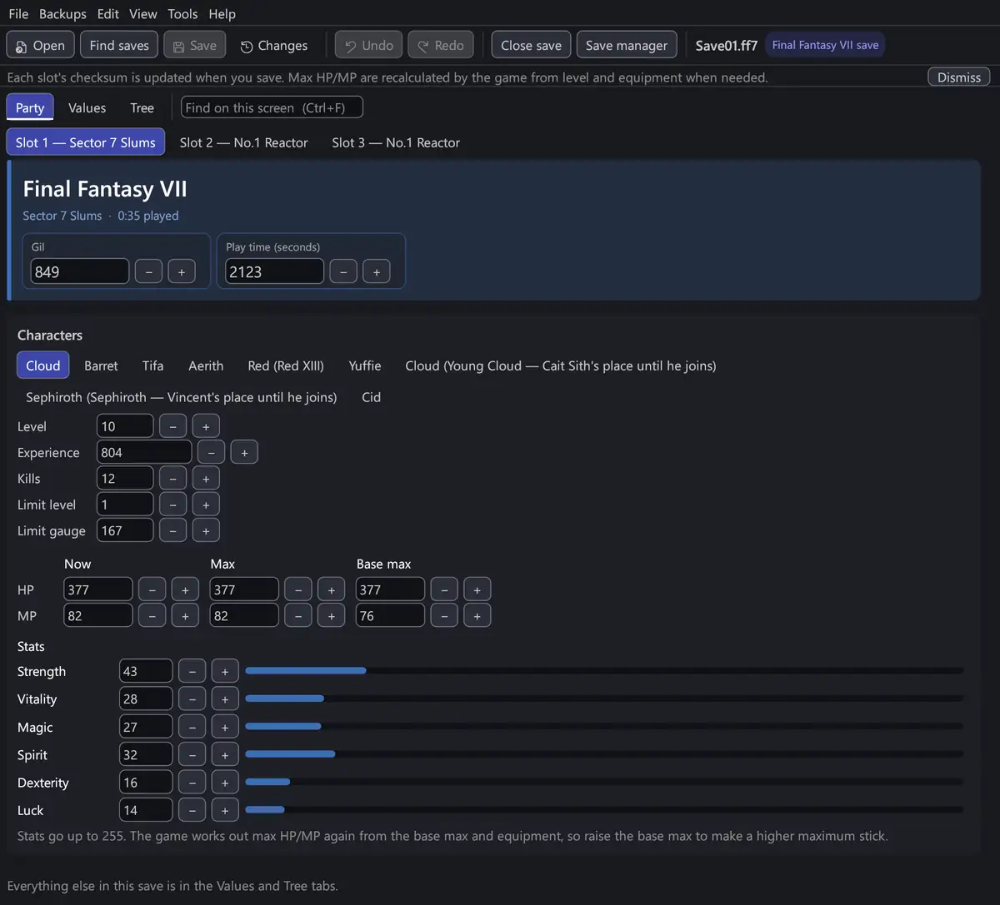

Final Fantasy VII save editor
Edit your Final Fantasy VII (2013 Steam) save on your own PC with Universal Save Editor, a free, offline save editor and manager for 560+ (569) games. Back up, restore and start new runs from the same window. Nothing is uploaded and there are no limits.
Version 0.8.5: Windows (64-bit) · Windows on ARM · Linux (64-bit) · Linux on ARM · macOS
All versions and release notes
What you can edit

Where Final Fantasy VII (2013 Steam) keeps its saves
Folder: Documents\Square Enix\FINAL FANTASY VII Steam\user_<id>
Files: save00.ff7 …
You don't need to find it yourself: choose Find my game's saves in the editor, pick Final Fantasy VII (2013 Steam), and it lists the saves it finds. (The browser version can't look through your folders: open the file from this folder yourself.)
How to edit your Final Fantasy VII (2013 Steam) save
- Download Universal Save Editor for Windows or Linux; just run it. Rather not install anything? Use it in your browser instead: it runs on your computer too, and saving downloads the edited file.
- Close the game, so it doesn't write over your changes.
- Choose Find my game's saves, pick Final Fantasy VII (2013 Steam) and open your save (or drag the save file onto the window).
- Change what you want, then Save. The editor checks the new file and backs up the old one first.
Questions about Final Fantasy VII (2013 Steam) saves
Where is the Final Fantasy VII (2013 Steam) save file?
Usually in Documents\Square Enix\FINAL FANTASY VII Steam\user_<id>, in files named save00.ff7 …. The downloaded editor finds it for you: choose Find my game's saves and pick Final Fantasy VII (2013 Steam).
Will Final Fantasy VII (2013 Steam) still load an edited save?
The editor writes the save back in the same format the game uses and reads the new file back to check it before replacing anything. The original is backed up first, so if anything looks wrong in the game, restore it from Backups.
Can I edit Final Fantasy VII (2013 Steam) saves on Steam Deck or Linux?
Yes. There's a Linux build, and Find my game's saves also looks inside the Proton and Wine prefixes where Steam Play keeps Windows games' saves.
Can I edit my Final Fantasy VII (2013 Steam) save in the browser?
Yes. The browser version runs on your own computer and never uploads the save. Open the file yourself and keep a copy, because saving downloads the edited file instead of backing up the old one.
Is it safe to use with online play?
Edited saves are for single-player play. Don't use them in online or multiplayer modes, where they can break rules or get an account flagged.
Does it cost anything?
No. It's free and always will be: no ads, no account and no limits. The code is open source under the GPL-3.0.
Did it work in your game?
Tried an edit in Final Fantasy VII (2013 Steam)? Tell us whether it worked. It takes a minute, and no save is sent.
Why use it
- Free, forever. No price, no ads, no account, no paid tier.
- Offline. Your save never leaves your computer: nothing is uploaded, so there are no file size limits, queues or rate limits.
- Safe. Every save is checked by reading it back before it's written, and the old file is backed up first (Backups › Open save manager).
- Works on games it doesn't know. Value search finds a number you know, or one you don't (a health bar, a hidden counter): scan, play, save, then keep what increased, decreased, changed or stayed the same.
- Linux and Steam Deck. Find my game's saves also looks inside Proton and Wine prefixes, where Windows games run through Steam Play keep their saves.
- In your language. Menus and messages in English, German, Spanish, French, Brazilian Portuguese, Japanese and Simplified Chinese, following the system language.
- Save manager (toolbar button). Automatic and named backups kept in a folder next to each save, where no game loads them. Restore any backup (the current save is backed up first), compare it, or back up and start a new game on a one-save game and restore the old one later. Every backup is flushed to disk and checked before anything is replaced.
- Open source. Anyone can read the code (GPL-3.0).
Edited saves are for single-player play. Don't use them in online or multiplayer modes.